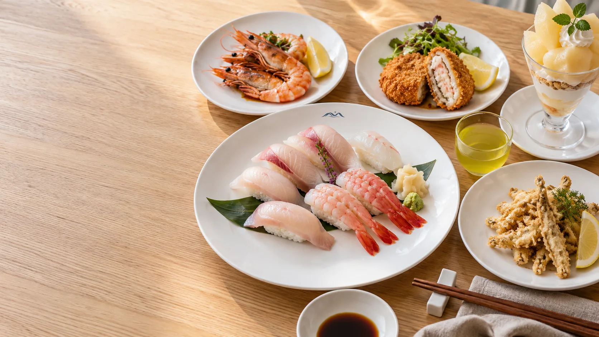
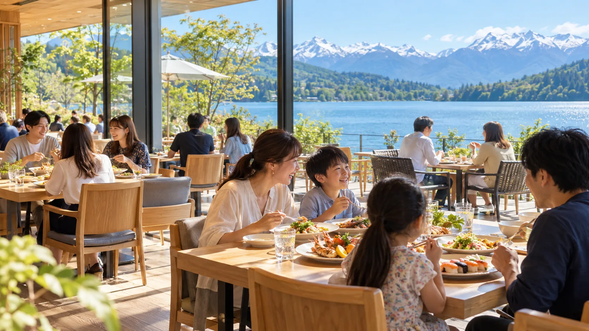
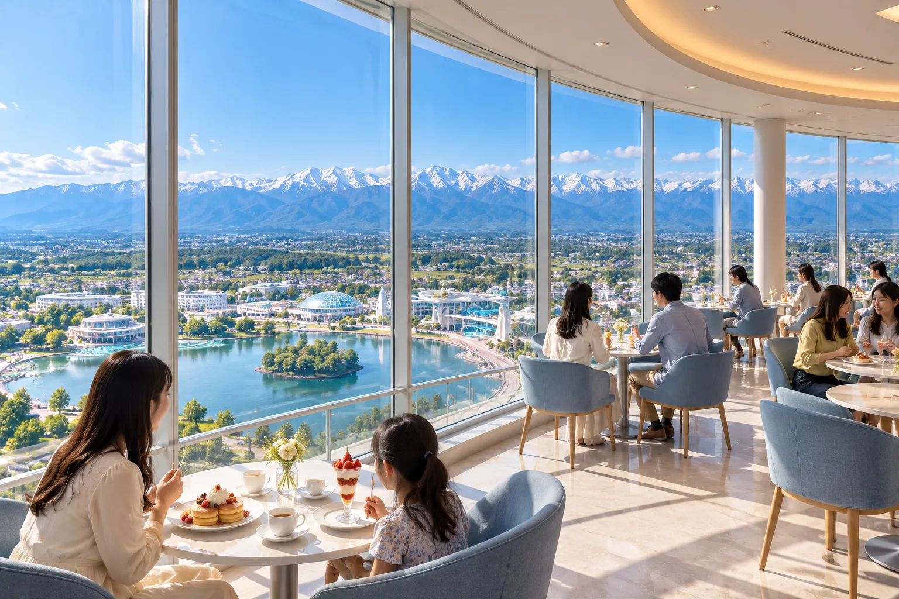

白えびのグリル
透きとおる白えびを、香ばしく焼き上げました。

食べる時間まで、心おどる。
DINING CONCEPT
湖を眺めるグリルと、空に浮かぶようなカフェ。パークでの一日に、おいしい休憩を。
RESTAURANTS

湖を眺めながら、富山の旬の食材をグリルで味わうレストラン。家族でゆったり過ごせます。

展望タワーの展望フロアにあるカフェ。立山連峰と中央湖を見わたしながら、軽食とスイーツを。
DINING GUIDE
NEXT
湖のそばのホテルや、来園の計画もチェックしよう。